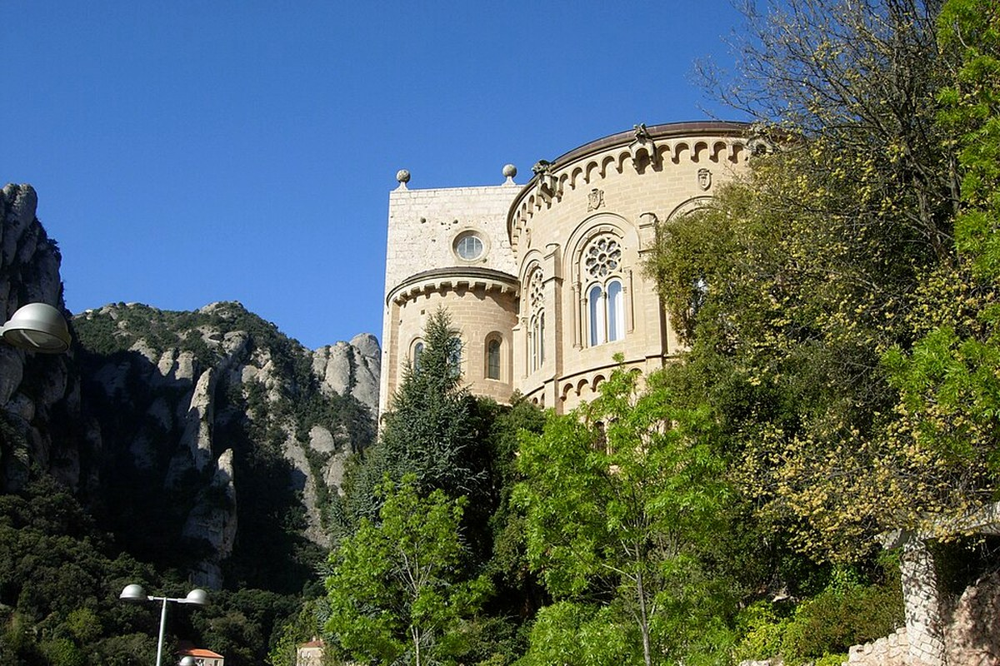
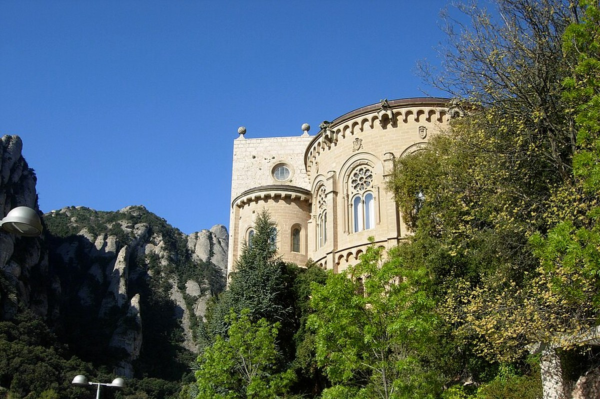

도시 건축 사이에 자연을 넣어 경험의 폭을 넓힌다.




Montserrat
후회 없는 여행을 기준으로 가이드·커플·현지인의 관점을 합의한 일정.
예상 도보82분
대중교통195분
택시·차량0분
일정 지점11곳
반드시 참고: Cremallera 산악열차 조합 기준. Sant Joan Funicular 운행은 당일 확인.
산세·수도원·전망 사진을 모두 남길 수 있다.
Aeri와 Cremallera 티켓을 섞지 않고 마지막 연결편을 저장한다.
숙소 출발
Plaça d’Espanya 이동
왜 중요한가숙소 출발은(는) 오늘의 흐름에서 다음 장면으로 자연스럽게 이어지는 핵심 지점이다.
볼 포인트Plaça d’Espanya 이동. 대표 풍경과 공간의 분위기에 집중한다.
실전 팁혼잡하면 핵심을 보고 이동하고, 예약 장소는 15분 일찍 도착한다.
시간 관리표시된 이동시간에 환승·대기 10분을 더한다.
MetroUrgell Metro Barcelona → Placa Espanya FGC12분 · 경로 ↗
Plaça d’Espanya FGC
R5·결합권 확인
왜 중요한가Plaça d’Espanya FGC은(는) 오늘의 흐름에서 다음 장면으로 자연스럽게 이어지는 핵심 지점이다.
볼 포인트R5·결합권 확인. 대표 풍경과 공간의 분위기에 집중한다.
실전 팁혼잡하면 핵심을 보고 이동하고, 예약 장소는 15분 일찍 도착한다.
시간 관리표시된 이동시간에 환승·대기 10분을 더한다.
열차Placa Espanya FGC → Monistrol de Montserrat Station70분 · 경로 ↗
FGC R5
Monistrol 방면
왜 중요한가FGC R5은(는) 오늘의 흐름에서 다음 장면으로 자연스럽게 이어지는 핵심 지점이다.
볼 포인트Monistrol 방면. 대표 풍경과 공간의 분위기에 집중한다.
실전 팁혼잡하면 핵심을 보고 이동하고, 예약 장소는 15분 일찍 도착한다.
시간 관리표시된 이동시간에 환승·대기 10분을 더한다.
산악열차Monistrol de Montserrat Station → Montserrat Rack Railway15분 · 경로 ↗
Cremallera
산악열차 환승
왜 중요한가Cremallera은(는) 오늘의 흐름에서 다음 장면으로 자연스럽게 이어지는 핵심 지점이다.
볼 포인트산악열차 환승. 대표 풍경과 공간의 분위기에 집중한다.
실전 팁혼잡하면 핵심을 보고 이동하고, 예약 장소는 15분 일찍 도착한다.
시간 관리표시된 이동시간에 환승·대기 10분을 더한다.
도보Montserrat Rack Railway → Montserrat Monastery Spain5분 · 경로 ↗
Montserrat Monastery
바실리카·광장
왜 중요한가Montserrat Monastery은(는) 오늘의 흐름에서 다음 장면으로 자연스럽게 이어지는 핵심 지점이다.
볼 포인트바실리카·광장. 대표 풍경과 공간의 분위기에 집중한다.
실전 팁혼잡하면 핵심을 보고 이동하고, 예약 장소는 15분 일찍 도착한다.
시간 관리표시된 이동시간에 환승·대기 10분을 더한다.
도보Montserrat Monastery Spain → Montserrat Monastery Restaurants8분 · 경로 ↗
Montserrat Lunch
간단한 점심
왜 중요한가Montserrat Lunch은(는) 오늘의 흐름에서 다음 장면으로 자연스럽게 이어지는 핵심 지점이다.
볼 포인트간단한 점심. 대표 풍경과 공간의 분위기에 집중한다.
실전 팁혼잡하면 핵심을 보고 이동하고, 예약 장소는 15분 일찍 도착한다.
시간 관리표시된 이동시간에 환승·대기 10분을 더한다.
도보Montserrat Monastery Restaurants → Sant Joan Funicular Montserrat10분 · 경로 ↗
Sant Joan Funicular
전망 또는 대체 산책
왜 중요한가Sant Joan Funicular은(는) 오늘의 흐름에서 다음 장면으로 자연스럽게 이어지는 핵심 지점이다.
볼 포인트전망 또는 대체 산책. 대표 풍경과 공간의 분위기에 집중한다.
실전 팁혼잡하면 핵심을 보고 이동하고, 예약 장소는 15분 일찍 도착한다.
시간 관리표시된 이동시간에 환승·대기 10분을 더한다.
푸니쿨라+도보Sant Joan Funicular Montserrat → Montserrat Monastery Spain25분 · 경로 ↗
수도원 복귀
하산 준비
왜 중요한가수도원 복귀은(는) 오늘의 흐름에서 다음 장면으로 자연스럽게 이어지는 핵심 지점이다.
볼 포인트하산 준비. 대표 풍경과 공간의 분위기에 집중한다.
실전 팁혼잡하면 핵심을 보고 이동하고, 예약 장소는 15분 일찍 도착한다.
시간 관리표시된 이동시간에 환승·대기 10분을 더한다.
산악열차+열차Montserrat Monastery Spain → Placa Espanya Barcelona90분 · 경로 ↗
Barcelona 귀환
Cremallera+FGC
왜 중요한가Barcelona 귀환은(는) 오늘의 흐름에서 다음 장면으로 자연스럽게 이어지는 핵심 지점이다.
볼 포인트Cremallera+FGC. 대표 풍경과 공간의 분위기에 집중한다.
실전 팁혼잡하면 핵심을 보고 이동하고, 예약 장소는 15분 일찍 도착한다.
시간 관리표시된 이동시간에 환승·대기 10분을 더한다.
MetroPlaca Espanya Barcelona → Urgell Metro Barcelona12분 · 경로 ↗
숙소 인근
편한 저녁
왜 중요한가숙소 인근은(는) 오늘의 흐름에서 다음 장면으로 자연스럽게 이어지는 핵심 지점이다.
볼 포인트편한 저녁. 대표 풍경과 공간의 분위기에 집중한다.
실전 팁혼잡하면 핵심을 보고 이동하고, 예약 장소는 15분 일찍 도착한다.
시간 관리표시된 이동시간에 환승·대기 10분을 더한다.
도보Urgell Barcelona → Urgell Metro Barcelona5분 · 경로 ↗
숙소 복귀
일정 종료
왜 중요한가숙소 복귀은(는) 오늘의 흐름에서 다음 장면으로 자연스럽게 이어지는 핵심 지점이다.
볼 포인트일정 종료. 대표 풍경과 공간의 분위기에 집중한다.
실전 팁혼잡하면 핵심을 보고 이동하고, 예약 장소는 15분 일찍 도착한다.
시간 관리표시된 이동시간에 환승·대기 10분을 더한다.
오늘의 후회 방지 가이드
광장에서 산의 형태를 먼저 보고, 운행 시 상부역에서 수도원 방향을 내려다본다. 운휴하면 Sant Miquel 쪽 짧은 산책으로 대체한다.